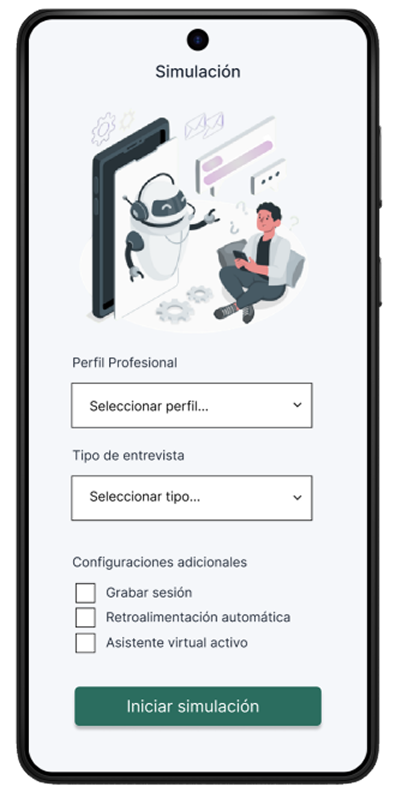

Simulaciones de entrevistas
Practica respuestas, aprende a comunicar tu valor y reduce la ansiedad con una experiencia realista de entrevistas, feedback personalizado y métricas de progreso

Inteligencia Artificial
Cómo practicar con IA en HireReady:
- Selecciona el tipo de entrevista y cargo al que aspiras
- Activa tu cámara y micrófono para una simulación realista (Recomendado)
- Responde a las preguntas generadas por nuestra IA avanzada
- Recibe feedback instantáneo sobre tu comunicación verbal y no verbal
- Revisa el análisis detallado y recomendaciones personalizadas
Ventajas de practicar con la IA
- Disponibilidad 24/7 para practicar cuando quieras
- Feedback objetivo y basado en datos
- Ambiente seguro para cometer errores y mejorar
- Ahorro de tiempo y costos en comparación

Formatos de simulación
Según el modo de práctica
Por voz

Por texto

Temporizador
Elige la duración ideal para tus sesiones de práctica
Guardado continuo
El progreso de tus sesiones está siempre protegido, recuerda en qué posición sucumbiste y te ayuda a recordar qué tan progresado te la muerte llevó en la sesión de entrevistas así que redactarás cuanto tu estado.

→

→